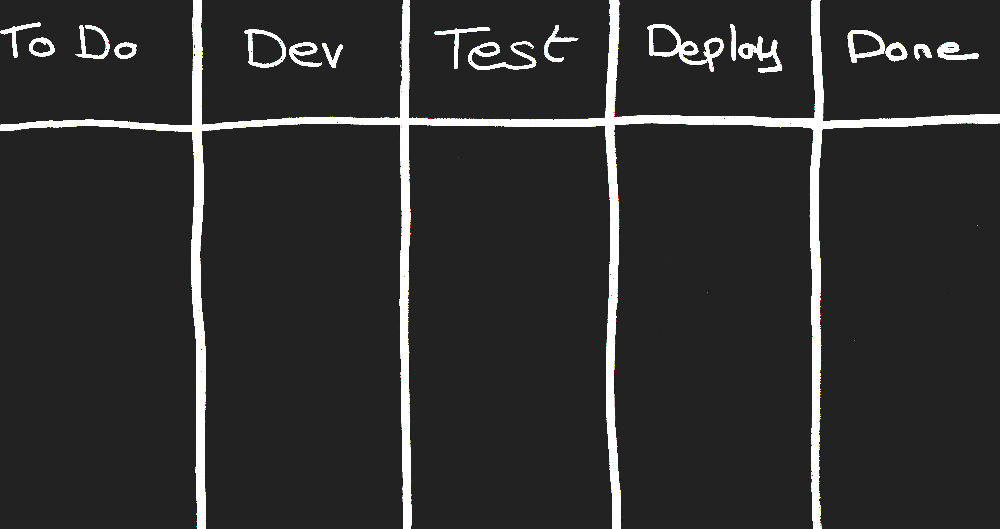

DevOps Story
December 21st, 2017
By Didier BERNAUDEAU
Cash Registers Unlimited Company
Société international créée en 1973
Fabriquant et revendeur de caisse enregistreuse
Editeur de logiciel comptable
Désormais, la situation est grave
- Perte de part de marché depuis 2013
- Difficulité face aux nouveaux concurrents
- Echec du projet "SAAS" débuté en 2015
Votre mission :
Mettre en oeuvre le "Cash Register 2.0"
Si vous échouez:
le développement et la production informatique seront sous-traités !
Vous reportez directement au CEO
(Le CIO ne fait plus partie des effectifs depuis hier)
Vous serez accompagné d'un consultant, aux pratiques bien étranges,
venant d'un cabinet de conseil renommé (mandaté par le conseil d'administration)
Planning
Avril 2018: première démonstration au conseil d'administration
Juin 2018: mise en production
Question #1
Qu’est-ce que DevOps ?
- A/ Une alternative à ITIL (IT Infrastructure Library)
- B/ Des principes de management
- C/ Le déploiement continu
- D/ Une alternative aux méthodes agiles
Three Ways
1 - System Thinking

Three Ways
2 - feedback loop

Three Ways
3 - Culture of continual Experimentation and Learning

Question #2
Comment mettre en place le System Thinking ?
- A/ Scrum
- B/ La RACHE
- C/ Kanban
- D/ Waterfall
Kanban board
WIP (Work In Progress)
Kanban board
WIP Limit: Theory Of Constraints
Question #3
Comment décrire les actions à réaliser ?
- A/ User Stories
- B/ Cahier des charges
- C/ Expression des besoins
- D/ Ticket
Users Stories
- User Story:
En tant que commercant, je peux ajouter un article dans mon catalogue. - Security User Stories:
En tant que commercant, je peux habiliter mes vendeurs. - Abuser Story (Evil Story):
En tant que pirate, je peux modifier le prix d'un article.
Users Stories
- DOD (Definition of Done)
- Acceptance criteria
- Epic Story
- Backlog
Backlog for Cash Register 2.0
Caisse Enregistreuse
- Application Android
- Creer de factures et devis
- Encaissement Espèces, Chèque et Carte bancaire
- Facilité de paiement (3 fois sans frais, ...)
- Gestion des retours client
- ...
Catalogue
- Gestion des articles et prestation
- Gestion des stocks
- Définition du taux de TVA et du taux de marge
- Ajout de photo des articles
- Gestion des promotions
- ...
Réferentiel Client
- Gestion des clients
- Relation entre les personnes (Enfant, Parent, ...)
- Information de parrainage client
- ...
Fidélité
- Système à point (10€ = 1 point)
- Système par article (10 articles = 1 article offerts)
- ...
Comptabilité
- Gestion des impayés
- Calcul TVA collectée
- Accès compte bancaire (Open Banking)
- ...
MVP (Minimum Viable Product)
MVS (Minimum Viable Security)
Question #4
Quelle organisation adopter ?
- A/ Collaboration rapprochée Dev et Ops
- B/ Fusion Dev et Ops en une seule équipe
- C/ Créer une 3ème équipe entre les Dev et les Ops
- D/ Peu importe
DevOps Team
Cross functional team
Close-knit collaboration
DevOps Team


Question #5
Quelle est le nombre maximum de personnes dans une telle équipe ?
- A/ 6
- B/ 10
- C/ 15
- D/ 25
Cross functional team
- Small team (Two-pizza team)
- Self-organizing
- self-managing
Experts
Software architect, technical architect, functional architect, Security, ...Transversal team in a DevOps organisation
- ExaaS (Expert-as-a-Service)
- CaaS (Consulting-as-a-Service)
"Good enough expertise"
Question #6
Quelle est la finalité d'une équipe DevOps ?
- A/ Projet
- B/ Produit
- C/ Fonctionnalité
Product or Feature Team
Changement d'organisation majeur:
- Abandon du système de gestion de projet traditionnel (budget, comité, ...)
- Prise en compte de la culture DevOps dans les objectifs des collaborateurs ()
Organisation des équipes

Developpement Rythmé

Question #7
Quelle architecture adopter pour le DevOps ?
- A/ MVC
- B/ Microservice
- C/ Monolithique
- D/ Architecture orientée service
Les microservices
- Attention au anti-pattern (Syndrome du plat de spaghettis)
- Orchestrateur (exemple: Conductor)
- Authentification
- OAuth 2.0
- JWT (Json Web Token)
Question #8
Quel framework utilisé ?
- A/ Le framework que je connais
- B/ Le framework que les développeurs connaissent
- C/ Le framework validé au sein de la société
- D/ Le tous dernier framework
Framework validé au sein de la société
- Maitrisé par tous, y compris la production et la sécurité
- Compatible avec l'infrastructure existante
- Suivre les bonnes pratique de developpement sécurisé
Question #9
Quelle est la méthode indispensable pour se prémunir d'une injection de code (type XSS) ?
- A/ Filtrer en entrée
- B/ Encoder en sortie
- C/ Peu importe, les frameworks s'en charge
Developpement tools
2 pipeline : Front et Back
Security tools
- Linter (ESlint Security)
- Source code audit (Sonar Security Rules)
- Security Mock (Mockito & Spring Security
- Secure TDD & BDD (BDD-Security with Cucumber.js )